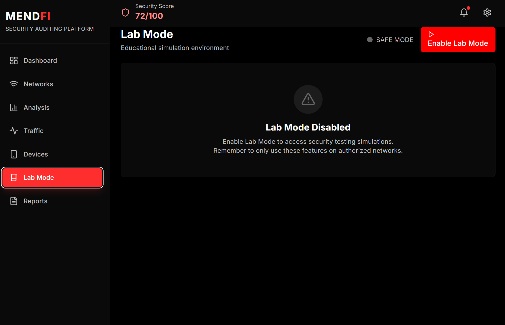

Escaneo de redes
Detecta redes WiFi cercanas, identifica su cifrado, intensidad de señal, canal y posibles señales de configuración insegura o exposición innecesaria.
MendFi es una herramienta de auditoría WiFi que convierte datos técnicos de red en una interfaz clara, visual y accionable. Permite detectar redes cercanas, identificar dispositivos conectados, monitorizar tráfico y analizar riesgos desde un único panel.

Configuración débil, servicios visibles y varios activos detectados.
MendFi no se limita a mostrar datos sueltos. Su objetivo es ordenar la información de una auditoría WiFi y ayudar al usuario a comprender qué está pasando en su entorno de red.
Detecta redes WiFi cercanas, identifica su cifrado, intensidad de señal, canal y posibles señales de configuración insegura o exposición innecesaria.
Localiza dispositivos conectados, muestra IP, MAC, fabricante y tipo aproximado para entender qué elementos forman parte de la red.
Visualiza actividad de red, protocolos, conexiones y patrones básicos para detectar comportamientos relevantes durante la auditoría.
Resume hallazgos técnicos en niveles de riesgo, explicaciones claras y recomendaciones orientadas a reducir exposición.
Esta sección está preparada para enseñar capturas reales de tu aplicación. Cada pestaña representa una parte clave del flujo de auditoría.


Esta sección sirve para enseñar varias partes del producto de forma rápida, visual y comercial. Cambia las rutas por tus imágenes reales.
Resumen visual de redes, dispositivos, tráfico y exposición para entender el estado de la red desde el primer vistazo.
Listado de redes cercanas con información sobre seguridad, señal, canal y posibles indicadores de configuración débil.
Identificación de activos conectados con IP, MAC, fabricante y clasificación visual por tipo de dispositivo.
Lectura de actividad de red, protocolos y conexiones para aportar contexto al análisis técnico.
Traducción de hallazgos técnicos en severidad, impacto y acciones sugeridas para mejorar la seguridad.

Zona pensada para pruebas, notas, terminal o investigación técnica durante una auditoría controlada.
La propuesta de valor cambia según quién lo use: usuarios domésticos, perfiles técnicos o equipos que necesitan una visión clara de su red.
Para usuarios que quieren saber qué dispositivos están conectados, si su WiFi está bien configurado y si hay señales de exposición.
Para estudiantes, analistas o entusiastas que necesitan observar redes, dispositivos y tráfico sin depender de varias herramientas separadas.
Para entornos donde hace falta explicar riesgos de red de manera visual, ordenada y comprensible para perfiles no técnicos.
La experiencia está diseñada para que el usuario avance desde el reconocimiento inicial hasta la priorización de riesgos.
Detecta redes WiFi cercanas y obtiene una primera visión del entorno inalámbrico.
Enumera dispositivos conectados y añade contexto mediante fabricante, IP, MAC y tipo.
Analiza actividad de red y tráfico para entender qué está ocurriendo en tiempo real.
Convierte los hallazgos en niveles de riesgo y recomendaciones accionables.
Esta línea temporal explica el funcionamiento de MendFi como si fuese una demo guiada del producto.
MendFi inicia el análisis detectando redes WiFi cercanas y recopilando información relevante como nombre de red, señal, canal y tipo de cifrado.
Después, analiza los dispositivos conectados para construir una vista más clara de los activos presentes en la red.
El sistema observa tráfico y protocolos para añadir una capa de comportamiento, no solo de inventario.
MendFi combina señales detectadas y las convierte en hallazgos interpretables: riesgos, impacto y recomendaciones.
El usuario obtiene una visión clara de qué revisar primero, qué puede esperar y qué representa mayor exposición para la red.
Esta sección ayuda a que la landing parezca más real y resuelve preguntas básicas sobre el enfoque del producto.
No. MendFi está planteado como una herramienta de visibilidad, auditoría y análisis defensivo. Su objetivo es ayudar a entender el estado de una red y detectar configuraciones o comportamientos que puedan representar riesgo.
La diferencia está en la experiencia. MendFi agrupa escaneo WiFi, dispositivos, tráfico y análisis en una interfaz única, más clara y pensada para interpretar la información rápidamente.
Está pensado para ambos perfiles. Los usuarios técnicos pueden profundizar en los datos, mientras que los usuarios menos técnicos reciben una lectura más visual y priorizada del riesgo.
Lo ideal es incluir una captura del dashboard general, una de redes WiFi, una de dispositivos, una de tráfico y una del análisis de seguridad. Con eso ya se entiende bastante bien el producto.
No. Esta landing funciona solo con HTML, CSS y JavaScript. Puedes subirla directamente a GitHub Pages sin instalar nada más.
Una interfaz moderna para descubrir activos, entender actividad y priorizar riesgos. Pensada para demos, auditorías controladas y presentación del proyecto como producto digital real.